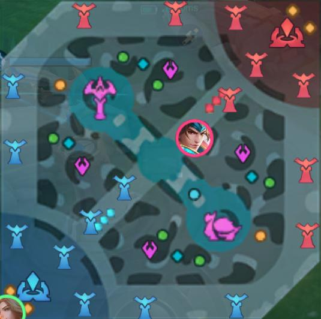

Strategi Algoritma UAS
MLBB Jungle Route Web Simulator
Input user disederhanakan: pilih hero dan buff awal. Logika mengikuti simulator Python yang sekarang.
Memuat dataset...
Peta Route

Node selalu tampil. Route yang terpilih akan di-highlight.
Ringkasan Algoritma
Belum ada simulasi.
Detail Step Algoritma Terpilih
| # | Dari | Ke | Tiba | Tunggu | Clear | Selesai | XP |
|---|